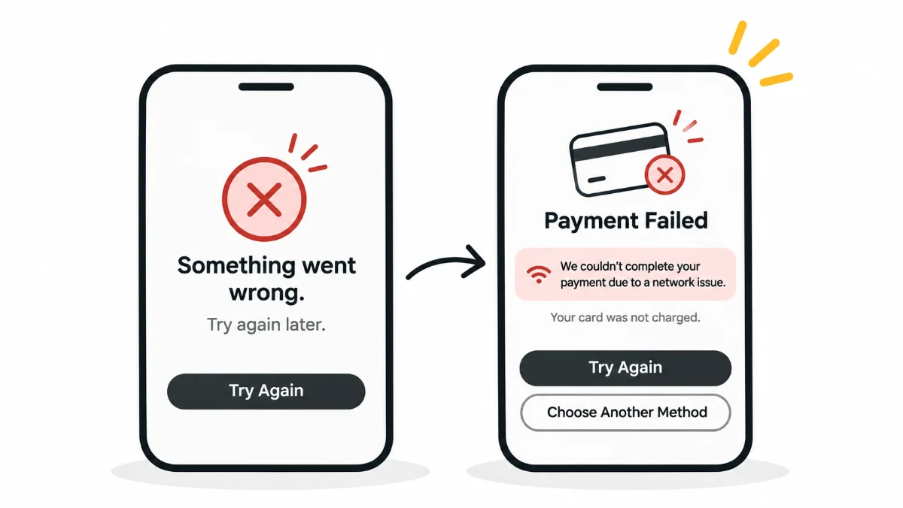

HeuristicsH9Help Users Recognise, Diagnose, and Recover from Errors
Errors are inevitable. Confusion is not
Every user will hit an error eventually. What separates a trustworthy product from a frustrating one isn't whether errors happen. It's what the product says when they do. Clarity and kindness in error messages is a design decision.

Welcome back to my 10-week series on Nielsen’s Usability Heuristics.
After diving into minimalist design last week, it's time to talk about something every user will inevitably face: errors.
This week, we're focusing on:
Heuristic #9: Help Users Recognise, Diagnose, and Recover from Errors.
Kitchen Story: Salt as a Success/Error Message
Let's start with a very simple example from real life.
When my mom cooks curry to go with rice, there's one important step she never skips: tasting the salt before the final step.
We all know how important salt is to a dish. Too much or too little, and the whole thing is off.
And let me be honest. Every time I cook, my mom ends up taking over the salt department. It's an art.
Now, here's how this connects to UX.
When my mom tastes the curry:
- If the salt is right → Success message.
- If it's too much or too little → Error message.
She immediately corrects it, and the dish turns out great.
But imagine a world where you could only taste the curry after it was fully cooked and served. If the salt was off, you'd have to redo the entire dish.
Frustrating and inefficient, right?
That's exactly how digital products should work.
Let users know when something is going wrong, while they can still fix it.
Digital Example: Failed Payments and Helpful Errors
We've all been there: trying to make an online payment, only to have it fail.
Let's compare two experiences.
Bad experience:
"Something went wrong. Try again later."
Better experience:
"Payment failed due to a network issue. Your card was not charged."
Options to: "Try Again" or "Choose Another Payment Method"
A helpful error message should do three things:
- Recognise the error: let the user know something went wrong.
- Diagnose the issue: explain the reason or provide a useful hint.
- Help with recovery: offer a solution or a clear next step.
The user shouldn't be left wondering what happened or what to do next.
Slips vs. Mistakes
We can further divide user errors into two categories: slips and mistakes.
We touched on this distinction in Week 5 while discussing Error Prevention. Let's look at it again from the perspective of helping users recover.
Slips
Slips happen when the intention is right, but the action goes wrong.
Real-life example:
You want to brush your teeth, but someone has accidentally replaced your toothpaste with shaving cream.
On autopilot, you grab it, and… well, yikes.
UX example:
You intend to click "Reply" but accidentally click "Reply All" because the two options are placed right next to each other.
Mistakes
Mistakes happen when the intention itself is wrong. The user misunderstands the situation or has an incorrect assumption.
Real-life example:
You experience body pain because of a fever but assume it's from yesterday's gym session.
UX example:
A user misunderstands what a button will do. They might think "Archive" means "Delete Permanently."
In both cases, design has an important role to play.
It should help users avoid these errors wherever possible and, when they do happen, make recovery simple and clear.
Key Takeaways
- Show clear, human-readable error messages. Avoid technical jargon.
- Highlight exactly what went wrong and where.
- Offer guidance and clear next steps so users know how to recover.
- Make errors easy to fix. Don't punish users for honest mistakes.
Concluding Thought
Errors are inevitable. But confusion is not.
A product that gently guides users out of mistakes, with clarity and kindness, builds trust and keeps users coming back.
Don't let an error be the end of the journey.
Make it a quick detour.